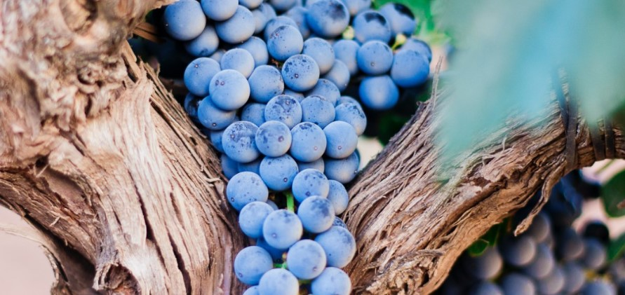

Sydafrikanska viner
2023-01-20
Sydafrika är ett utav de länder som in vinsamanhang kallas för "Nya världen" eftersom dom inte har tillverkat vin så länge där. Vindruvorna odlas framförallt runt Kapstadens kust och här har man odlat druvor sedan 1650-talet. De fem huvuregionerna där man producerar viner heter Coastal Region, Breede River Valley, Cape South Coast, Klein Karoo och Olifants River. Dessa är sedan uppdelade i en mängd olika distrikt och områden. Mestadels odlas dock vindruvorna i sydvästra Sydafrika där klimatet är bäst för det. Här möts Indiska Oceanen och Atlanten och klimatet är ungefär som vid Medelhavet.
Det är gröna druvor som odlas mest och dom vanligaste är chenin blanc och colombard men sauvignon blanc och chardonnay odlas mer och mer. Chenin blanc och colombard används framför allt till torra, fruktiga bordsviner men även för brandy. När det gäller blå druvor är de vanligaste chiraz och cabernet sauvignon men man odlar även mycket utav merlot, ruby pinotage och pinotage (som är en helt egen druvsort, den är korsad mella pinot noir och cinsault).
Här kommer några förslag på Sydafrikanska viner som man kan testa hemma. Det är två vita och tre röda.
- Moonlight Manor, Chenin blanc och Sauvignon blanc, 2023. 99:-aromatiskt och fruktigt vin med inslag av passionsfrukt, päron, vit persika, krusbär och lime.
- Robertson, Chardonnay, 2023, 79:-fruktigt vin med inslag av päron, fat, vanilj, citrusskal och honungsmelon.
- Lievland Cellar Selection, Cabernet Sauvignon, 2021, 121:-vin med fatkaraktär inslag av smaker som svarta vinbär, choklad, plommon, körsbär, kryddor, tobak och vanilj.
- The Choclate Block, 2021, 269:-mycket fruktig smak med inslag av choklad, svarta vinbär, plommon, björnbär, peppar och vanilj.
- Crazy Cat, Red Blend, 2023, 89:-fruktigt vin med inslag av mörka körsbär, vanilj, lakrits, plommon, fat och viol.
Hoppas ni får en fin vinprovning! För den som gillar att resa och tycker om vin, varför inte ta en tur till Sydafrika för att prova på vinerna där och se lite vilda djur på en gång.
Skål!